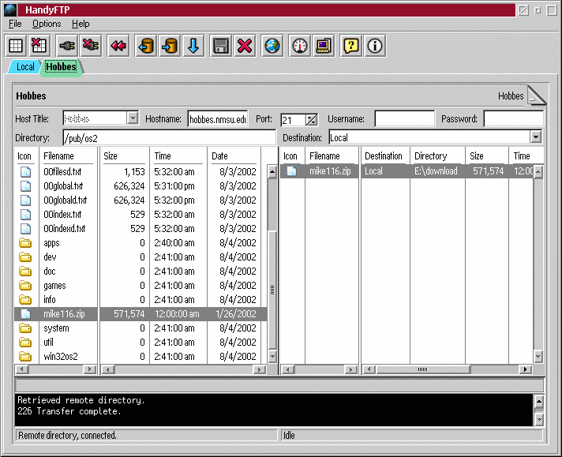

Tutorial

Think of it like this. Each site is a tab. You have a source tab and
a destination tab. So to do a transfer you need at least two connected tabs.
One can be local and one remote. Or both remote. Or both local
(although I don't see much of a point ;)).
If you want to download a file from a remote site to a local dir.
- Have a local tab open.
- Browse to the directory you want to download to.
- Go to the remote tab
- Use the destination combobox to choose your local tab.
- Select the file(s) you want to download
- Use the add to queue button or double click on the
filename.
They will appear in the queue on the right
- Click the flush queue button.
It will transfer all the queued files from one tab (site) to the other.
Brian Smith
dbsoft@technologist.com